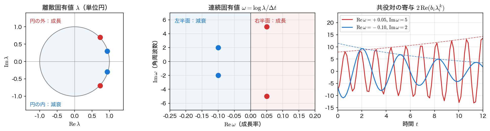
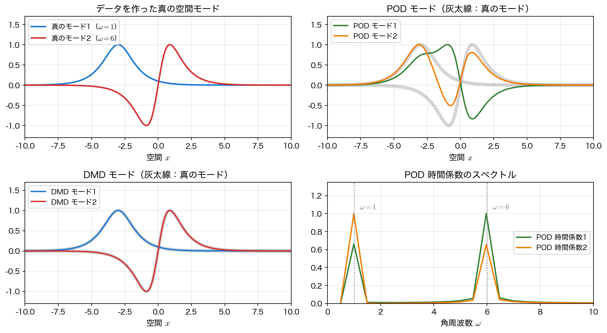

モードと固有振動の解釈
アルゴリズムが返すのは複素数の固有値 \(\lambda_i\)、複素ベクトルのモード \(\phi_i\)、複素の振幅 \(b_i\) である。数字の羅列のままでは何も分からない。ここでは、それらを 「どの形が、どの周波数で、どれだけの速さで成長・減衰するか」 という物理の言葉に翻訳する。翻訳の鍵は \(\lambda=e^{\omega\Delta t}\) というただ一つの関係式で、その先は第8回の極・第11回の固有値とまったく同じ読み方になる。
離散の固有値と連続時間の固有値
DMD が当てはめたのは離散の漸化式 \(x_{k+1}=Ax_k\) である。いま元のデータが、連続時間の線形系 \(\dot x=\mathcal Ax\) を \(\Delta t\) 間隔で標本化したものだったとしよう。この系の厳密解は \(x(t+\Delta t)=e^{\mathcal A\Delta t}x(t)\) だから、\(A=e^{\mathcal A\Delta t}\) が成り立ち、固有値も指数関数で対応する。
この \(\omega_i\) を 連続時間固有値（continuous-time eigenvalue）と呼ぶ。実部と虚部にはそれぞれ独立した意味がある。
すなわち \(\mathrm{Re}\,\omega\) は成長率、\(\mathrm{Im}\,\omega\) は角周波数 である。\(\lambda\) のままでは \(\Delta t\) に依存した量なので、標本化間隔の違うデータどうしを比べるときは必ず \(\omega\) に直す。第 \(2\) 式が「\(2\pi\) を法として」になっているのは、偏角が \((-\pi,\pi]\) の範囲でしか決まらないからである。\(|\mathrm{Im}\,\omega_i|\,\Delta t<\pi\) なら剰余は消えてただの等号になる。破ったときに何が起きるかは 応用のページ で扱う。
\(A=e^{\mathcal A\Delta t}\) はいつでも成り立つわけではない
この関係が言えるのは、元の系が本当に線形時不変で、しかも等間隔に標本化されている ときだけである。DMD が返す \(A\) は、そうであってほしいという願いのもとでデータに当てはめた行列にすぎず、その素性は何も保証されていない。系が非線形だったり、観測が状態の一部しか見ていなかったりすれば、\(\omega=\log\lambda/\Delta t\) は「そう読むと便利な量」ではあっても、真の連続時間固有値とは限らない。実際 応用のページ の飽和するデータでは、\(\mathrm{Re}\,\omega\) が実際の振る舞いとまったく合わなくなる。
まず第1回のショーケースと同じ \(\mathrm{sech}\) 型の \(2\) モードデータで確かめる。空間形状 \(\mathrm{sech}(x+3)\) が角周波数 \(\omega=1.0\) で、\(2\,\mathrm{sech}(x)\tanh(x)\) が \(\omega=6.0\) で振動しているだけの、答えの分かっているデータである。
import numpy as np
def dmd(X, dt, r):
"""前ページと同じ関数（λ・ω・モード Φ・振幅 b・特異値を返す）。"""
X1, X2 = X[:, :-1], X[:, 1:]
U, S, Vh = np.linalg.svd(X1, full_matrices=False)
Ur, Sr, Vr = U[:, :r], S[:r], Vh[:r].conj().T
At = Ur.conj().T @ X2 @ Vr / Sr
lam, W = np.linalg.eig(At)
Phi = X2 @ Vr / Sr @ W
b = np.linalg.lstsq(Phi, X[:, 0], rcond=None)[0]
return lam, np.log(lam.astype(complex))/dt, Phi, b, S
nx, nt = 400, 200
x = np.linspace(-10, 10, nx)
t = np.linspace(0, 4*np.pi, nt)
dt = t[1] - t[0]
m1 = 1.0/np.cosh(x + 3) # モード1 の空間形状
m2 = (1.0/np.cosh(x))*np.tanh(x)*2.0 # モード2 の空間形状
D = np.outer(m1, np.exp(1j*1.0*t)) + np.outer(m2, np.exp(1j*6.0*t))
lam, om, Phi, b, S = dmd(D, dt, 2)
print(f"Δt = {dt:.6f}")
print("特異値:", np.round(S[:4], 4))
print("|λ| :", np.round(np.abs(lam), 10))
print("ω :", np.round(om, 10))
\(|\lambda|=1\) ちょうど、\(\omega\) の実部は零 ── 成長も減衰もしない純粋な振動であると DMD が判定した。虚部の \(1.0\) と \(6.0\) は、データを作るときに指定した角周波数そのものである。特異値が \(3\) 番目から零になっていることから、ランクが \(2\) であることも同時に読み取れる。
単位円と安定性
\(\lambda\) を複素平面に描き、単位円 \(|\lambda|=1\) と比べるのが DMD の結果を読む標準的な手順である。
| \(\lambda\) の位置 | \(\mathrm{Re}\,\omega\) | 振る舞い |
|---|---|---|
| 単位円の内側 \(\lvert\lambda\rvert<1\) | 負 | 減衰する |
| 単位円の上 \(\lvert\lambda\rvert=1\) | 零 | 振幅を保って振動する |
| 単位円の外側 \(\lvert\lambda\rvert>1\) | 正 | 成長する |
これは第8回で伝達関数の極が 左半平面にあれば安定 と判定したのと同じことである。\(s\) 平面の左半平面が \(z=e^{s\Delta t}\) によって単位円の内側に写る、という対応がそのまま効いている。第11回で行列 \(A\) の固有値から平衡点を分類したのとも同じで、違うのは \(\omega\) を方程式からではなくデータから得た点だけである。
成長・減衰が実際に混ざったデータで見てみる。減衰する波（\(\mathrm{Re}\,\omega=-0.10\)、波数 \(1\)、角周波数 \(2\)）と成長する波（\(\mathrm{Re}\,\omega=+0.05\)、波数 \(3\)、角周波数 \(5\)）を重ねた \(128\times80\) の場である。
nxw, ntw = 128, 80
xw = np.linspace(0, 2*np.pi, nxw, endpoint=False)
tw = np.linspace(0, 12.0, ntw)
dtw = tw[1] - tw[0]
Xg, Tg = np.meshgrid(xw, tw, indexing="ij")
Dw = (np.exp(-0.10*Tg)*np.cos(1.0*Xg - 2.0*Tg)
+ 0.7*np.exp(0.05*Tg)*np.cos(3.0*Xg - 5.0*Tg))
lw, ow, Phw, bw, Sw = dmd(Dw, dtw, 4)
k = np.lexsort((ow.imag, ow.real)) # ω の実部→虚部の順に並べる
print(f"Δt = {dtw:.6f}")
print("特異値 :", np.round(Sw[:6], 3))
print("|λ| :", np.round(np.abs(lw[k]), 6))
print("偏角[度]:", np.round(np.degrees(np.angle(lw[k])), 3))
print("Re ω :", np.round(ow[k].real, 6))
print("Im ω :", np.round(ow[k].imag, 6))
Δt = 0.151899
特異値 : [49.066 48.503 32.07 30.164 0. 0. ]
|λ| : [0.984925 0.984925 1.007624 1.007624]
偏角[度]: [-17.406 17.406 -43.516 43.516]
Re ω : [-0.1 -0.1 0.05 0.05]
Im ω : [-2. 2. -5. 5.]
\(4\) 個の固有値が \(2\) 組の共役対をなしている。\(|\lambda|=1.0076>1\) の対は単位円のわずかに外側にあり、\(\mathrm{Re}\,\omega=+0.05\) ── 成長するモードである。\(|\lambda|=0.9849<1\) の対は内側で \(\mathrm{Re}\,\omega=-0.10\)、減衰するモードである。偏角の \(\pm43.5^\circ\) は \(\mathrm{Im}\,\omega\,\Delta t=5\times0.1519=0.7595\ \mathrm{rad}\)、\(\pm17.4^\circ\) は \(2\times0.1519=0.3038\ \mathrm{rad}\) に対応している。
単位円のすぐ外は「成長」と即断できない
\(|\lambda|=1.0076\) という値は、\(\Delta t=0.1519\) では成長率 \(+0.05\) に相当するが、\(1\) からのずれはわずか \(0.8\%\) でしかない。雑音や標本化誤差で \(|\lambda|\) が \(1\%\) 動くことは珍しくないので、単位円の近くに落ちた固有値については「成長する」とも「減衰する」とも言えない のが実情である。
ここで気をつけたいのは、\(\mathrm{Re}\,\omega=\log\lvert\lambda\rvert/\Delta t\) に直したところで判定が楽になるわけではない、という点である。\(\Delta t\) で割れば数値は大きくなるが、推定の誤差も同じだけ大きくなるので、両者の比は何も変わらない。効くのは 観測区間の長さ のほうである。全長 \(T\) のあいだに振幅が \(e^{\mathrm{Re}\,\omega\,T}\) 倍になるので、この倍率が雑音より大きいかどうかが実質的な判定条件になる。上の例なら \(T=12\) 秒で \(e^{0.05\times12}=1.82\) 倍 ── これだけ育てば見て取れる。同じ \(\mathrm{Re}\,\omega\) でも \(T=1\) 秒しか測っていなければ \(1.05\) 倍にしかならず、雑音に埋もれる。データを長く取ること、あるいは区間を前半・後半に分けて推定値がどれだけばらつくかを実測することが、唯一の確かめ方である。

振幅と時空間再構成
固有値とモードだけでは、どのモードがどれだけ効いているかが決まらない。それを決めるのが振幅 \(b=\Phi^{+}x_0\) である。\(3\) つがそろえば、場の全体が有限個の項の和として書ける。
右辺は「空間形状 \(\phi_i(x)\) × 時間変化 \(e^{\omega_it}\)」の和である。第2回のフーリエ級数、第12回の直交多項式展開と同じ 展開 の形をしているが、基底が事前に決まった三角関数や多項式ではなく、データが自分で選んだ形 になっている点が違う。
\(\mathrm{sech}\) 型 \(2\) モードのデータに戻り、DMD が本当に \(2\) つを分離できているかを確かめる。モードには「\(c\) 倍しても \(b\) が \(1/c\) 倍になるだけ」という自由度があるので、比較には向きだけを見る量 \(|\langle\phi,\,\text{真のモード}\rangle|/(\lVert\phi\rVert\lVert\text{真のモード}\rVert)\)（\(1\) なら同一方向）を使う。
lam, om, Phi, b, _ = dmd(D, dt, 2)
def align(v, w):
"""位相と大きさの自由度を除いた向きの一致度（1 なら同一）。"""
return abs(np.vdot(v, w))/(np.linalg.norm(v)*np.linalg.norm(w))
for j in np.argsort(np.imag(om)):
print(f"ω = {om[j].imag:.6f}i |b| = {abs(b[j]):.4f} "
f"一致度 m1 {align(Phi[:, j], m1):.6f} "
f"m2 {align(Phi[:, j], m2):.6f}")
Dk = Phi @ np.array([b*lam**p for p in range(nt)]).T
print(f"再構成の相対誤差 = {np.linalg.norm(D - Dk)/np.linalg.norm(D):.2e}")
ω = 1.000000i |b| = 6.3166 一致度 m1 1.000000 m2 0.348370
ω = 6.000000i |b| = 7.2938 一致度 m1 0.348370 m2 1.000000
再構成の相対誤差 = 6.36e-14
一致度は対角にちょうど \(1.000000\) である。\(\omega=1.0i\) のモードは \(m_1\) と、\(\omega=6.0i\) のモードは \(m_2\) と完全に一致しており、周波数ごとに空間形状が切り分けられている。非対角の \(0.3484\) は真の \(m_1\) と \(m_2\) 自身の重なり（\(m_1,m_2\) は直交していない）であって、分離の失敗ではない。再構成の誤差も機械精度である。
POD との違い
同じデータに第13回の POD（SVD）を適用すると、何が返ってくるだろうか。
U, S, Vh = np.linalg.svd(D, full_matrices=False)
print("特異値:", np.round(S[:3], 4))
for j in range(2):
print(f"POD モード{j+1}: 一致度 m1 {align(U[:, j], m1):.4f} "
f"m2 {align(U[:, j], m2):.4f}")
fr = np.fft.fftfreq(nt, dt)*2*np.pi # 角周波数の格子
for j in range(2):
c = np.abs(np.fft.fft(Vh[j]))
print(f"POD 時間係数{j+1} のピーク ω = "
f"{np.round(np.sort(fr[np.argsort(-c)[:2]]), 3)}")
特異値: [112.8081 76.5652 0. ]
POD モード1: 一致度 m1 0.7014 m2 0.9124
POD モード2: 一致度 m1 0.7127 m2 0.4092
POD 時間係数1 のピーク ω = [0.995 5.97 ]
POD 時間係数2 のピーク ω = [0.995 5.97 ]
POD モードはどちらも \(m_1\) とも \(m_2\) とも中途半端に似ている。時間係数のスペクトルを見れば理由が分かる ── どの POD モードの時間変化にも \(\omega=1\) と \(\omega=6\) の両方が入っている。
これは POD の欠陥ではなく、定義どおりの振る舞いである。POD が最適化しているのは「\(r\) 個で張ったときのエネルギー（分散）」だけで、時間変化の形には何の制約も課していない。エネルギーを最大にする方向が、たまたま単一周波数の方向と一致する保証はない。一方 DMD は \(\phi_i\) に「時間変化が \(\lambda_i^k\) ちょうど」という強い制約を課すので、周波数で分ける ことになる。
| POD（SVD） | DMD | |
|---|---|---|
| 最適化するもの | ランク \(r\) でのエネルギー | 各モードの時間変化が \(\lambda^k\) |
| モードの直交性 | 直交する | 一般に直交しない |
| 時間変化 | \(v_i(t)\) は任意の形 | \(\lambda_i^k\) に固定 |
| 得意なこと | 少ない自由度での圧縮 | 周波数・成長率の同定 |
| 順序づけ | \(\sigma_i\) の大きい順 | 順序は自明でない（\(\lVert b_i\phi_i\rVert\) のような尺度不変量で並べる） |
最後の行は実務では意外に厄介である。POD には \(\sigma_1\ge\sigma_2\ge\cdots\) という自然な順序があるが、DMD にはない。ここで \(\lvert b_i\rvert\) だけで並べてはいけない。前に触れたとおり \(\phi_i\) を \(c\) 倍すれば \(b_i\) は \(1/c\) 倍になるので、\(\lvert b_i\rvert\) は \(\phi_i\) の規格化の仕方しだいでいくらでも変わる数字だからである。実際この節の出力でも、モードのノルムがそろっていないまま \(\lvert b_i\rvert\) を印字している。順位をつけたいなら \(\lVert\phi_i\rVert=1\) に正規化してから \(\lvert b_i\rvert\) を見るか、規格化に依らない \(\lVert b_i\phi_i\rVert=\lvert b_i\rvert\lVert\phi_i\rVert\)（そのモードが \(k=0\) でデータに与える寄与の大きさ）を使う。時間変化まで込めるなら \(\max_k\lVert b_i\phi_i\lambda_i^k\rVert\) で並べる流儀もある。

どちらを使うか
圧縮・次元削減が目的なら POD（同じランクなら誤差は POD 以下にはならない ── Eckart–Young の定理）、振動数や成長率を知りたいなら DMD である。Eckart–Young が言うのは「POD の誤差が最小」であって「他より真に小さい」ではないので、等号も起こりうる ことに注意する。実際、真のランクに達すればどちらも零になる（応用のページ の \(r=4\) がその例である）。差が出るのは途中で、進行波データを \(r=3\) で切ると POD の再構成誤差 \(0.367\) に対し DMD は \(0.530\) と劣る。DMD は再構成の精度を犠牲にして、解釈できる形を取り出しているのである。両方を計算して見比べるのが実務的には最も安全である。
まとめ
- 離散固有値 \(\lambda\) は \(\omega=\log\lambda/\Delta t\) で連続時間の固有値に直す。\(\mathrm{Re}\,\omega\) が成長率、\(\mathrm{Im}\,\omega\) が角周波数である。
- \(\lambda\) を単位円と比べれば安定性が読める（内側＝減衰、上＝中立、外側＝成長）。これは第8回の「極が左半平面なら安定」、第11回の固有値による分類と同じ判定である。
- 単位円のすぐ近くに落ちた固有値の成長・減衰は、雑音に埋もれて判定できない。\(\mathrm{Re}\,\omega\) の値と観測区間の長さを見て判断する。
- 場の全体は \(x_k\simeq\sum_ib_i\phi_ie^{\omega_ik\Delta t}\) と、空間形状と指数的な時間変化の積の和で書ける。\(\mathrm{sech}\) 型 \(2\) モードのデータでは一致度 \(1.000000\) で真のモードを分離できた。
- POD は「エネルギー最適な形」、DMD は「単一の周波数を持つ形」を返す。同じデータで POD モードは \(2\) つの周波数を混ぜてしまう。圧縮なら POD、周波数・成長率の同定なら DMD と使い分ける。
次は、雑音のあるデータで実際にランクをどう選び、どこまで予測できるか ── 時系列・流体データへの応用 に進む。